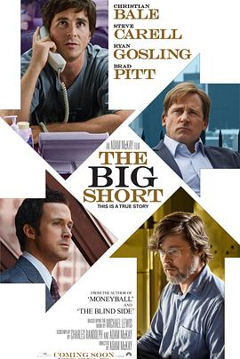

大空头 / The Big Short
又名：大卖空(台) / 沽注一掷(港) / The Big Short: Inside the Doomsday Machine
超级赞，周一加油拿个最佳改变剧本
作品信息
| 导演 | 亚当·麦凯 |
| 编剧 | 查尔斯·伦道夫 / 亚当·麦凯 / 迈克尔·刘易斯 |
| 主演 | 克里斯蒂安·贝尔 / 史蒂夫·卡瑞尔 / 瑞恩·高斯林 / 布拉德·皮特 / 梅丽莎·里奥 / 约翰·马加罗 / 拉菲·斯波 / 杰瑞米·斯特朗 / 芬·维特洛克 / 玛丽莎·托梅 / 崔西·莱茨 / 文峰 / 阿德普波·奥杜耶 / 凯伦·吉兰 / 马克思·格林菲尔德 / 比利·马格努森 / 玛格特·罗比 / 理查德·塞勒 / 赛琳娜·戈麦斯 |
| 类型 | 剧情 / 传记 |
| 制片国家/地区 | 美国 |
| 语言 | 英语 |
| 上映日期 | 2015-11-12(AFI影展) / 2015-12-11(美国点映) / 2015-12-23(美国) |
| 片长 | 130分钟 |
| IMDb | tt1596363 |
最后一次看到是 2026-08-12T21:12:24+08:00 · 豆瓣原页